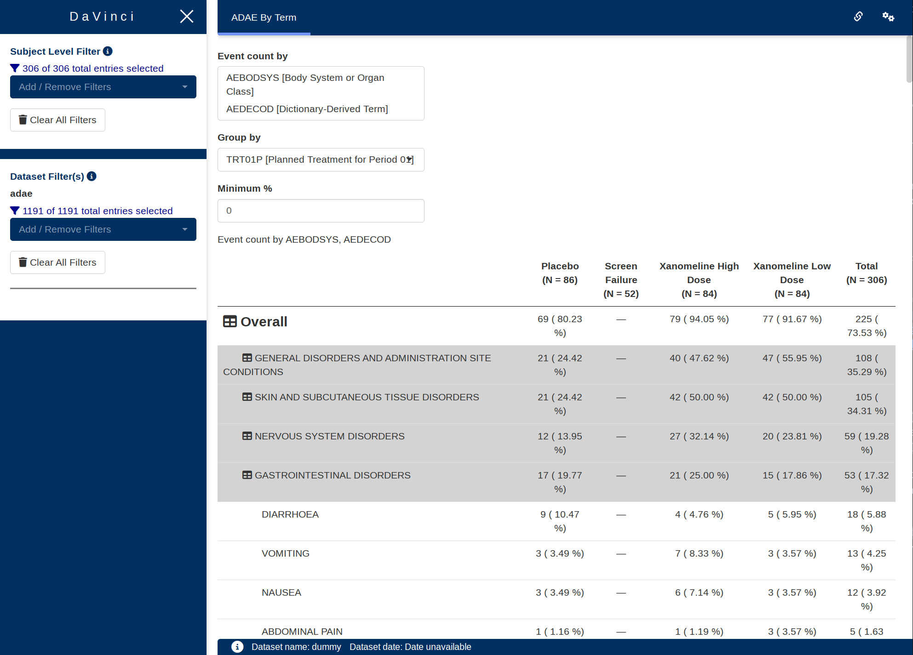

Event Count module
hierarchical_count_table.Rmd
This guide provides a detailed overview of the hierarchical_count_table module and its features. It is meant to provide guidance to App Creators on creating Apps in DaVinci using the hierarchical_count_table module. Walk-throughs for sample app creation using the module are also included to demonstrate the various module specific features.
The hierarchical_count_table module makes it possible to visualize a hierarchy table with event counts for each of the levels.
Features
hierarchical_count_table features the following tables:
- A hierarchy table arranged by highest to lowest event count normalized by population.
It supports bookmarking.
Arguments for the module
dv.tables::mod_hierarchical_count_table() module uses several arguments with the following being mandatory and the rest optional. As part of app creation, the app creator should specify the values for these arguments as applicable.
Mandatory Arguments
module_id: A unique identifier of type character for the module in the app.subjid_var: A common column across all datasets that uniquely identify subjects. By default: “SUBJID”table_dataset_name: The dataset that contains the events per row. For example,ADAEpop_dataset_name: The dataset that contains one row per subject in the total population. For example,ADSLIt expects a dataset with an structure similar to https://www.cdisc.org/kb/examples/adam-subject-level-analysis-adsl-dataset-80283806 , one record per subject It expects to contain, at least,subjid_var
Refer to dv.tables::mod_hierarchical_count_table() for the complete list of arguments and their description.
Creating a hierarchical count table application
requireNamespace("pharmaverseadam")
dv.manager::run_app(
data = list(dummy = list(adsl = pharmaverseadam::adsl,
adae = pharmaverseadam::adae)),
module_list = list(
"AE Hierarchy Table" = dv.tables::mod_hierarchical_count_table(
module_id = "hierarchical_count_table",
table_dataset_name = "adae",
pop_dataset_name = "adsl"
)
),
filter_data = "adsl",
filter_key = "USUBJID"
)Download
This module allows downloading the table as Excel (.xlsx) or Word (.rtf).
In the downloaded table, overall number of patients (N = seen in the selected group’s column header) is shown in the first row below the column names.
Additionally, if the option to split count and percent into separate columns is selected, then selected group variable’s metrics is split into two columns for every group item, {group item} [N] to show count value and {group item} [%] to show relative percentage.